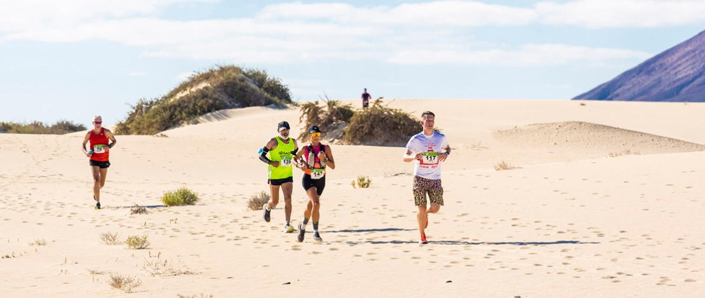

Balearic Islands
Balearic Islands
 Madrid
Madrid
Things to do
Not to be missed

Ordesa National Park
The Ordesa National Park in Huesca is home to the Cola de Caballo waterfall. The climb to the top is along the most famous hiking route in the Huesca Pyrenees. It can be accessed by the main road connecting the village of Torla with the Ordesa meadowland (car access is restricted at certain times of the year, when a bus service must be used instead). From here, it takes three hours to reach this spectacular waterfall. In fact, there are waterfalls all the way along the climb.

Half marathon through coastal landscapes with sea views
You can run and breathe the sea breeze, if you decide to compete in half marathons around the island of Mallorca, in April, in the famous Magaluf Half Marathon, where you will run along the beach and the main avenues. There is also a 10-kilometre race. If you prefer a wilder destination, you can run through the golden sand of the Corralejo Natural Park, for the Fuerteventura Dunes International Half Marathon, on the Canary Islands, a spectacular volcanic setting that few marathons can offer.
Select a city to find out the weather conditions
Enjoy the best events
Exhibitions, festivals, festivities, and many more!
1 / 3

2 / 3

11 Apr 2023 Bando de la Huerta spring fiesta
3 / 3